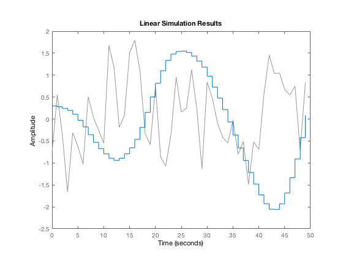
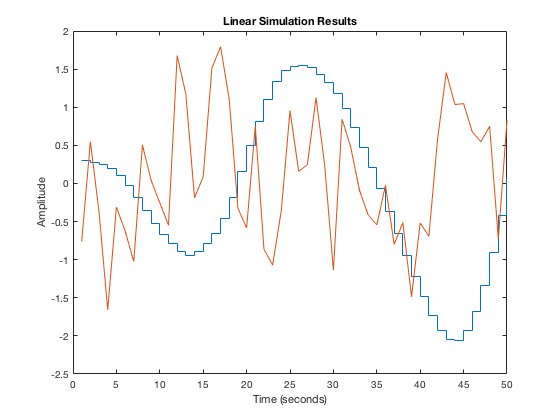
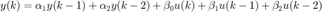

Homework 3
Contents
Problem 1
Starting with a spring-mass system of Homework 1, generate the same discrete-time state-space model with a sampling interval of 0.2 sec. Use position of the mass as your measured output variable.
clear
A = [0 1
-1 0];
B = [0; 1];
C = [1 0];
D = 0;
dt = 0.2;
syst = c2d(ss(A,B,C,D),dt);
Problem 2
Write a small Matlab program to generate a set of output data from a given set of input data and the initial state. Compare your program result with the Matlab function dlsim for an arbitrary random input history that is 50 points long (that is 10 seconds in duration). Use the Matlab function randn to generate a random input history that follows a normal (Gaussian) distribution.
l = 50; inp = randn(1,l); nxn = size(syst.A); n = nxn(1); x = zeros(n,l); x(:,1) = [0.3;0]; y = zeros([size(syst.C*syst.A*x(:,1)) l]); for i = 1:l x(:,i+1) = syst.A*x(:,i) + syst.B*inp(i); y(:,:,i) = syst.C*x(:,i) + syst.D*inp(i); end dlsim(syst.A,syst.B,syst.C,syst.D,inp,x(:,1)) figure stairs(1:l,y(:)) hold on plot(1:l,inp) title('Linear Simulation Results') xlabel('Time (seconds)') ylabel('Amplitude') 
Problem 3
We already know that the ARX representation of this system has the form:

where the coefficients can be computed from a known model of the system. Let us now work backwards to obtain these same coefficients from system identification. Show that you can use the input-output data in (2) to identify these coefficients. Do this by first forming the data matrices Y and V and the unknown parameters are in P: Y = PV as described in class.
Now solve for P from (a) P = YV + and (b) P = YV T VV T ( ) +
%. At the moment just use the Matlab function pinv to % compute the pseudo-inverses. % [Y, V] = YV_Form(inp,y(:)',2); P_a = Y*pinv(V) P_b = Y*(V')*pinv(V*V')
P_a = -0.0140 1.9247 0.0323 -0.9662 0.0194 P_b = -0.0140 1.9247 0.0323 -0.9662 0.0194
P_a